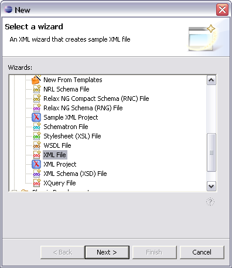

The mcs-project.xml file allows a remote MCS server to locate your project policy files. There can only be one policy source directory for a project, and all your MCS resources must be in this folder or one under it. The default path of the source directory is WebContent/mcs-policies, but you can use any name you wish.
The mcs-project.xml file should contain the code described below and be located in the main jive directory
<?xml version="1.0" encoding="utf-8"?> <project xmlns="http://www.volantis.com/xmlns/mcs/project" xmlns:xsi="http://www.w3.org/2001/XMLSchema-instance" name="jive"> <xml-policies directory="WebContent/mcs-policies/"/> <assets base-url="."/> </project>
The table describes the mcs-project.xml file elements.
| Name | Purpose |
|---|---|
| <?xml version="1.0" encoding="utf-8"?> | XML declaration |
| <project xmlns="http://www.volantis.com/xmlns/mcs/project" xmlns:xsi="http://www.w3.org/2001/XMLSchema-instance" name="jive"/> | Namespaces declaration. The name attribute contains the project name. |
| <xml-policies directory="WebContent/mcs-policies/"/> | Defines location of the policy files. In our case it is default location of the MCS project. |
| <assets base-url="."/> | The assets element defines the URLs for component variants and asset groups, and can be useful in specifying alternate locations for audio, image, and other files |
